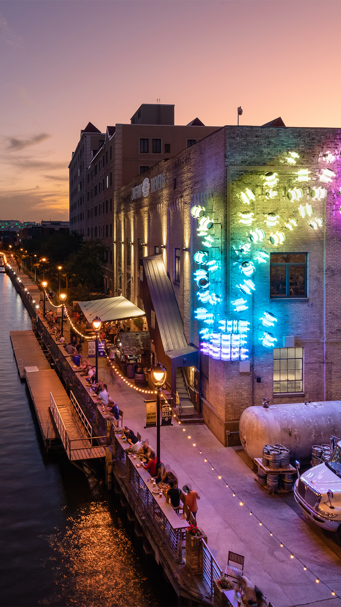

Why Milwaukee
Milwaukee, the brew city
Milwaukee, Wisconsin, is a vibrant city that offers a unique blend of rich history, diverse culture, and stunning lakefront views. Known for its thriving craft beer scene, the city is home to iconic breweries and festivals, making it a haven for beer enthusiasts.
Visitors can explore the fascinating museums like the Milwaukee Art Museum, attend a variety of festivals or immerse themselves in the city's industrial past at the Harley-Davidson Museum. With beautiful parks, the historic Third Ward district, and a growing food scene, Milwaukee combines Midwestern charm with modern attractions, making it a perfect destination for anyone seeking adventure, culture, and relaxation.